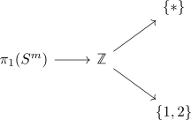
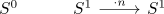
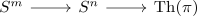
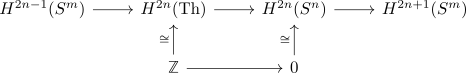
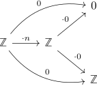
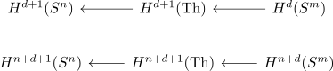
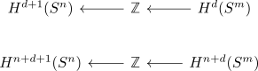

classification of fiber sequences with spheres
Proposition
Let
be a fiber sequence.
Then
- $d = n-1$
- $m = 2n -1$
Proof
$n = 1$
Then we have a long exact sequence given by

In particular $\pi_1(S^m) \neq 0$ since $\mathbb{Z} \rightarrow \pi_0(S^d)$ is not injective.
hence we get

where the map $S^1 \rightarrow S^1$ is classified by some multiplication. For $n \neq \pm 2$ the fiber is given by $n$ points, in particular this is only a sphere for $n = \pm 2$.
$n > 1$
Then we may assume that the spherical fibration is oriented (cf. spherical fibration with trivial pi_1 as oriented fibration). Consider the thom isomorphism for oriented spherical fibrations and the long exact sequence of a pair of singular cohomology

Suppose $H^{d}(S^m) = \mathbb{Z}$ with an iso to $H^{d+1}(\mathrm{Th})$, then we get
So we may assume that
is the zero map.
Then in particular
is injective (hence multiplication by $\pm 1$ by the reasons above) which shows that $H^{d+1}(S^n) = \mathbb{Z}$ or $n = d + 1$
Now $H^{n+d+1}(\mathrm{Th}) = H^{2n}(\mathrm{Th}) = \mathbb{Z}$ so we get

Which shows that $H^{2n-1}(S^m) \twoheadrightarrow \mathbb{Z}$ surjects. In particular we get $m = 2n-1$ since $2n - 1 \neq 0$ as $n \neq 1$.
proof
We claim that all maps are given by multiplication with either $\pm 1$ or $0$. Suppose otherwise, then by some torsion free argument we have

which contradicts $\mathrm{im}(\cdot n) = \mathrm{ker}(\cdot )$.
Then by <shifted thom spaces> and the fact that we know the singular cohomology of the sphere very well we get

or

where clearly at least one of them has to be nonzero.
Then $n + d + 1 > n$ showing that $H^{n+d}(S^m) = \mathbb{Z}$ or $m = n +d$ Furthermore $n + d > d$ as $n \geq 0$, which shows that $H^{d+1}(S^n) = \mathbb{Z}$ or $d+1=n$